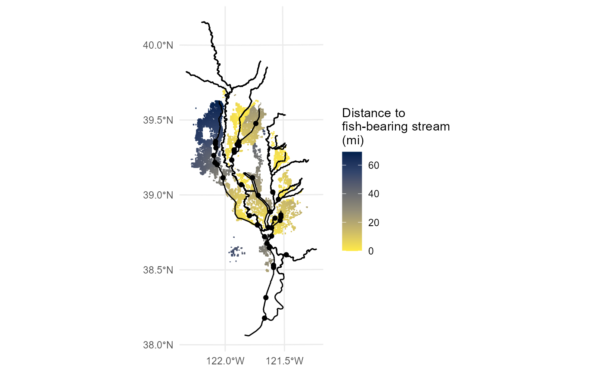
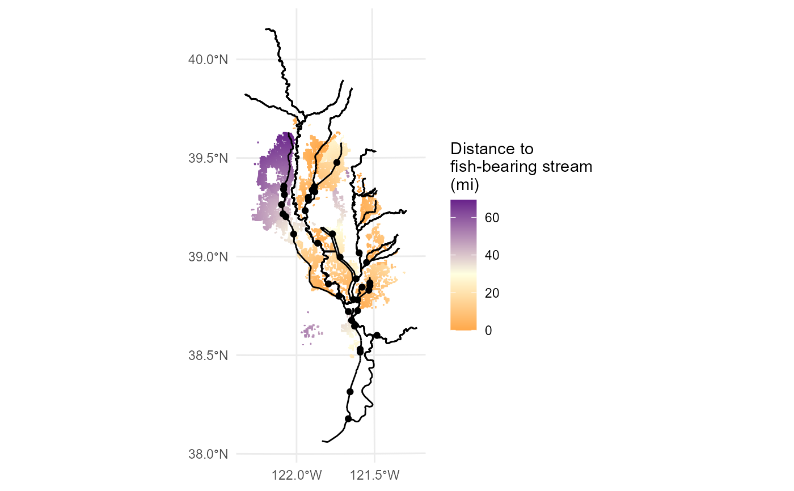
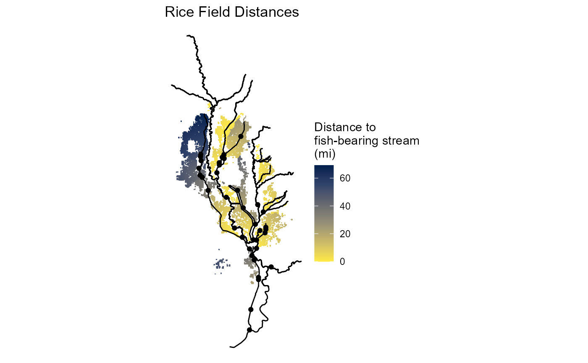

plot_distances.RdPlot all fields showing their calculated flow distances. Distance table is first joined to the fields table. Displays the watersheds, return points, and waterways on the basemap.
plot_distances(
filename = NULL,
width = NULL,
height = NULL,
units = NULL,
colors = NULL,
direction = 1
)File name to create PNG image on disk. Optional if saving the plot is desired.
Plot width in units. If not supplied, uses the size of current graphics device.
Plot height in units. If not supplied, uses the size of current graphics device.
Units used for the width and height ("in", "cm", "mm", or "px"). Uses default ggplot dpi settings for resolution.
Color palette to use. Choose from either a character string indicating the viridis color map option to use (listed below), or a named vector defining a custom continuous gradient with low and high or a diverging gradient with low, mid, and high, e.g. colors = c(low="red", mid="white", high="blue"). For the diverging gradient, the average value is used as the midpoint.
magma (or A)
inferno (or B)
plasma (or C)
viridis (or D)
cividis (or E)
rocket (or F)
mako (or G)
turbo (or H)
If using one of the viridis scales for the color option, sets the order of colors in the scale. If 1, the default, colors are ordered from darkest to lightest. If -1, the order of colors is reversed.
plot_distances()
#> Joining with `by = join_by(unique_id)`

# Choose custom colors
plot_distances(colors=c(low="darkorange", mid="lightyellow", high="darkorchid4"))
#> Joining with `by = join_by(unique_id)`

# Returns a ggplot object that can be chained to additional ggplot functions
plot_distances() + ggplot2::ggtitle("Rice Field Distances") + ggplot2::theme_void()
#> Joining with `by = join_by(unique_id)`
